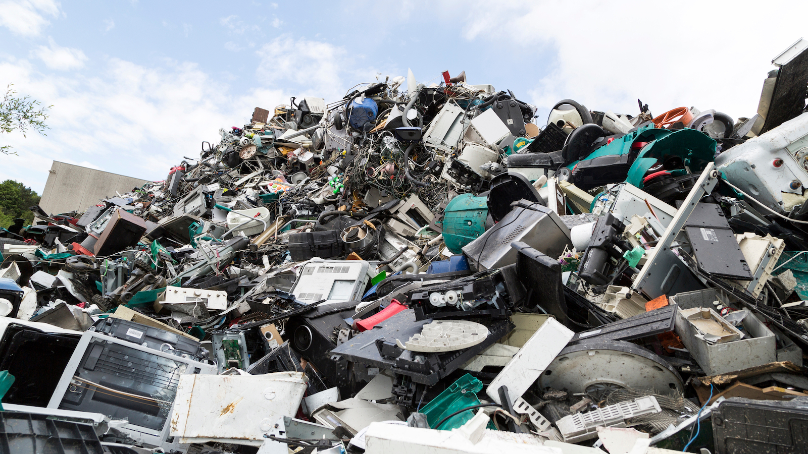

Impacto ambiental de las tecnologías inalámbricas
Si bien las tecnología inalámbrica ha transformado profundamente nuestra vida cotidiana, desde la comunicación y el acceso a internet hasta el funcionamiento de dispositivos inteligentes y redes globales. Sin embargo, este avance tecnológico no está exento de desafíos, especialmente en lo que respecta a su impacto ambiental. Aunque las tecnologías inalámbricas ofrecen innumerables beneficios en términos de conectividad y eficiencia, también conllevan una serie de efectos negativos que requieren atención.
Algunos de los impactos ambientales son los siguientes...
-
Consumo de energía y huella de carbono
Las redes inalámbricas, como Wi-Fi, 4G y 5G, requieren una infraestructura masiva con antenas, servidores y centros de datos, los cuales consumen grandes cantidades de electricidad.
-
Residuos electrónicos (e-waste)
Los dispositivos inalámbricos, como smartphones, routers, y wearables, tienen una vida útil limitada y generan grandes cantidades de desechos electrónicos.
-
Problemas ambientales del (e-waste):
-
Contaminación por metales pesados como plomo, mercurio y cadmio.
-
Dificultades en el reciclaje debido a la mezcla de materiales en los dispositivos.
-
Desechos tecnológicos en países en desarrollo, donde a menudo no hay infraestructura adecuada para su tratamiento.
 -
-
Contaminación electromagnética
Las redes inalámbricas emiten radiación electromagnética, lo que ha generado preocupaciones sobre su impacto en la salud y el medioambiente. Aunque no hay evidencia concluyente de efectos dañinos para los humanos, algunos estudios sugieren que:
-
La exposición prolongada a la radiación puede afectar a algunos organismos, como aves e insectos.
-
Interferencia con el comportamiento de migración de aves y abejas.
-
-
Uso de recursos naturales
La fabricación de dispositivos inalámbricos requiere materiales como litio, cobalto y tierras raras, extraídos mediante minería, lo que puede causar:
-
Deforestación y degradación del suelo en zonas mineras.
-
Contaminación del agua debido a los residuos de la extracción.
-
Conflictos sociales y explotación laboral en países donde se extraen estos minerales.
-
Energía utilizada por antenas y servidores
Las estaciones base de
telecomunicaciones funcionan las 24 horas del día, lo que incrementa la demanda energética.
Impacto del 5G
Si bien es más eficiente que el 4G, requiere más antenas
debido a su menor alcance, lo que puede aumentar el consumo energético global.